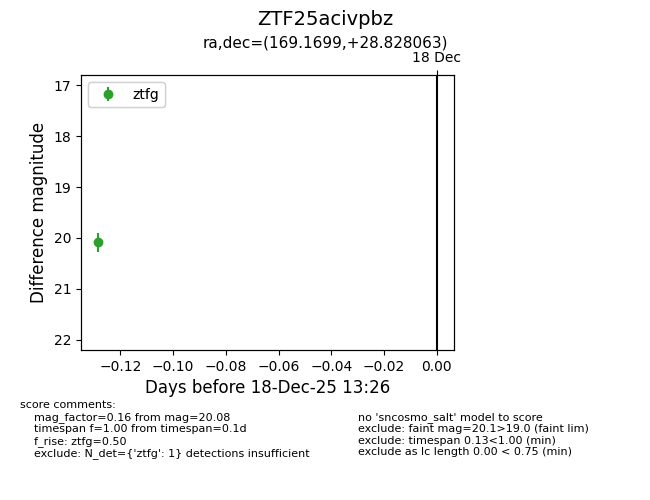
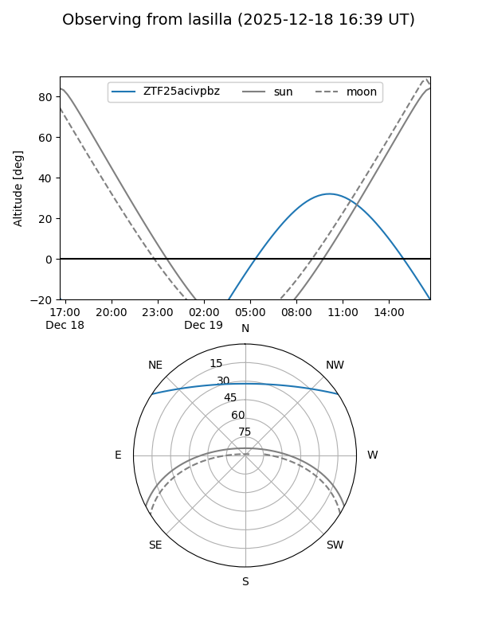

ZTF25acivpbz
Target ZTF25acivpbz at 2025-12-18 13:27
Aliases and brokers:
FINK: fink-portal.org/ZTF25acivpbz
Lasair: lasair-ztf.lsst.ac.uk/objects/ZTF25acivpbz
ALeRCE: alerce.online/object/ZTF25acivpbz
alt names
ZTF25acivpbz (ztf,fink_ztf)
Coordinates:
equatorial (ra, dec) = 169.1699,+28.82806
equatorial (HMS+DMS) = 11:16:40.77,+28:49:41.03
galactic (l, b) = (202.7333,+69.04466)
Photometry
last ztfg=20.08
1 ztfg detections
Lightcurve

Visibility


Additional plots